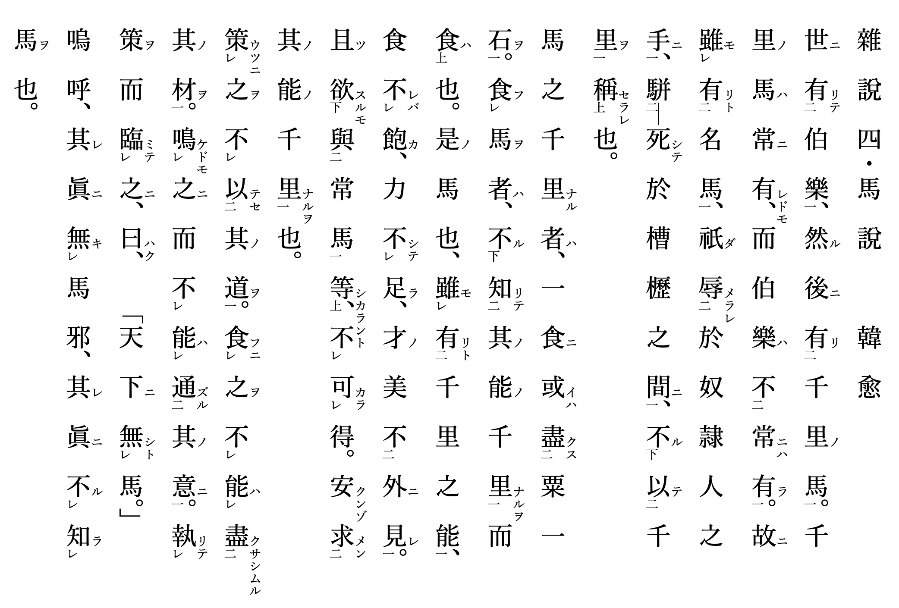

一、训读文（訓読文）

二、训读体（書き下し文）
世に伯樂有りて、然る後に千里の馬有り。千里の馬は常に有れども、伯樂は常には有らず。故に名馬有りと雖も、衹だ奴隷人の手に辱められ、槽櫪の間に駢死して、千里を以つて稱せられざるなり。
馬の千里なる者は、一食に或いは粟一石を盡くす。馬を食ふ者は、其の能の千里なるを知りて食はざるなり。是の馬や、千里の能有りと雖も、食飽かざれば、力足らず、才の美外に見れず。且つ常馬と等しからんと欲するも得べからず。安くんぞ其の能の千里なるを求めんや。
之を策うちに其の道を以つてせず。之を食ふに其の材を盡くさしむる能はず。之に鳴けどもその意に通ずる能はず。策を執りて之に臨みて、曰はく、「天下に馬無し。」と。嗚呼、其れ眞に馬無きか、其れ眞に馬を知らざるか。
三、后记
本文参考了网上的汉文训读材料，并使用汉文HTML进行排版。